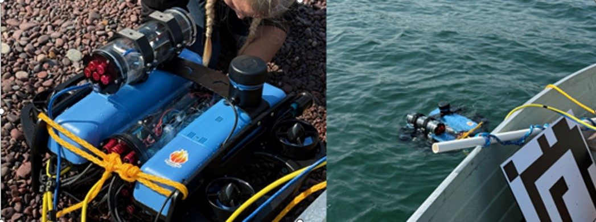
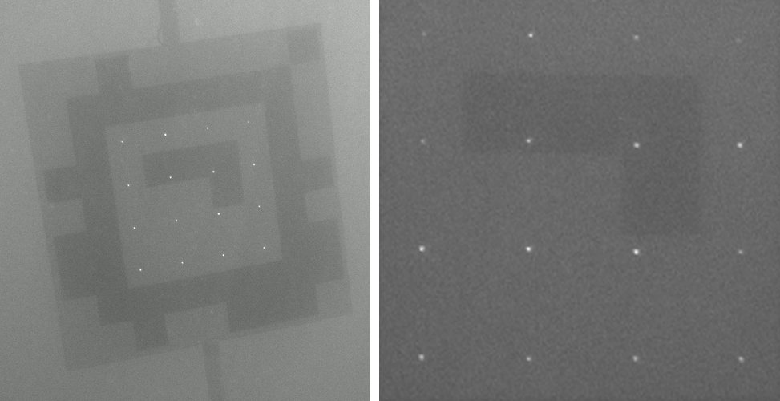
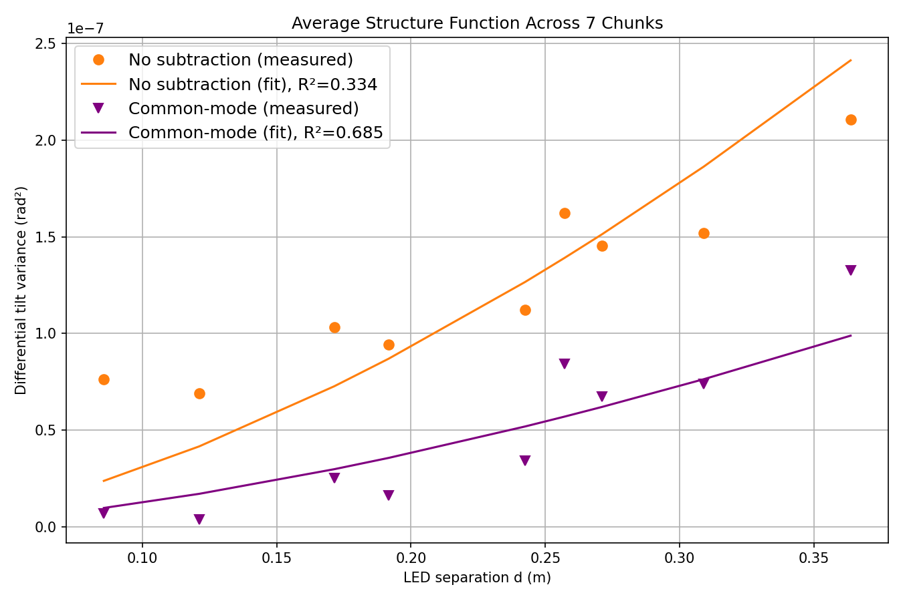

The measurement
Sixteen points of light, one number for turbulence
- A 4×4 grid of 470 nm LEDs, 8.57 cm apart, is inlaid in a 0.6 m AprilTag board that hangs 1.5 m below a boat.
- A BlueROV2 carrying a FLIR Blackfly camera is driven from the boat to about 15 m away and aimed at the board.
- The tag gives the camera's pose in every frame. That sets the path length and flattens the board's perspective, so ROV and boat motion can be removed.
- Turbulence makes neighbouring LEDs jitter differently. The variance of that differential tilt across all 120 LED pairs, binned by separation, is fitted to a Kolmogorov template, giving the path-averaged turbulence strength Cn2.


Results · 25 July 2025
Weak but measurable turbulence
At this short range the camera's own noise is comparable to the signal. Removing the jitter common to all pairs (common-mode regression) before fitting doubles the fit quality. The result agrees, within a factor of two, with an independent estimate from intensity scintillation on the same dataset (1.4 × 10−13).

| Method | Cn2 (m−2/3) | r0 (m) | R² |
|---|---|---|---|
| No subtraction | 1.72 × 10−13 | 0.259 | 0.334 |
| Common-mode | 7.19 × 10−14 | 0.392 | 0.685 |
Lake Superior at Eagle River, Michigan. The water was slightly turbid after heavy rain, and the path was shallow. These numbers describe that one collection, not underwater turbulence in general.
Next: repeat the measurement across seasons, depths and clearer offshore water. We also want to characterize the noise floor so longer paths become usable, and to test non-Kolmogorov and outer-scale models.
In the field
On the lake
Papers
Read more
- Differential Tilt Measurements from Underwater Optical Turbulence in Lake SuperiorL. S. Albro and J. P. Bos. Laser Communication and Propagation through the Atmosphere and Oceans XV, Proc. SPIE, 2026. doi:10.1117/12.3113975
- Characterization of Underwater Optical Turbulence in Lake Superior Using an Autonomous Underwater VehicleJ. P. Bos, L. Albro, D. Fleury and I. Mattson. Optica Laser Congress, 2025, paper LsW1C.5. doi:10.1364/LSC.2025.LsW1C.5
- Estimates of Cn2 in the Open Ocean from the MREP 20 Sea TrialJ. P. Bos. Optica Imaging Congress (pcAOP), 2024, paper PF1E.6. doi:10.1364/pcAOP.2024.PF1E.6
@inproceedings{albro2026differential,
title = {Differential Tilt Measurements from Underwater Optical Turbulence in Lake Superior},
author = {Albro, Linda S. and Bos, Jeremy P.},
booktitle = {Laser Communication and Propagation through the Atmosphere and Oceans XV},
series = {Proc. SPIE}, year = {2026},
doi = {10.1117/12.3113975}
}
@inproceedings{bos2025underwater,
title = {Characterization of Underwater Optical Turbulence in Lake Superior Using an Autonomous Underwater Vehicle},
author = {Bos, Jeremy P. and Albro, Linda and Fleury, Dominik and Mattson, Ian},
booktitle = {Optica Laser Congress 2025},
pages = {LsW1C.5}, year = {2025},
doi = {10.1364/LSC.2025.LsW1C.5}
}
A Michigan Tech SURF and REU project. Thanks to John Terhaar for help with the field setup.